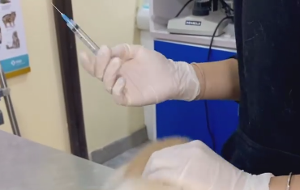

Building a calmer first clinic visit for nervous pets
Simple routines and environmental cues that help animals feel safer before they even arrive.
Read articlePetly Veterinary Clinic
Petly turns the clinic experience into something gentler and more human: elegant surroundings, low-stress handling, and a care team that explains every step with clarity.
Scroll to explore
Our Services
Petly combines preventive care, diagnostics, surgery support, and long-term wellness guidance in one calm, beautifully designed experience.
Explore all services
Routine exams, nutrition guidance, wellness planning, and gentle checkups that help catch concerns early.
Learn more
Carefully timed vaccine plans built around age, lifestyle, travel, and your pet’s full medical picture.
Learn more
Support for itching, allergies, coat issues, and parasite prevention with clearer long-term strategies.
Learn more
Focused assessment, calm communication, and practical next steps when families need answers quickly.
Learn more
Attentive surgical care with recovery planning that keeps families informed and pets more comfortable.
Learn moreWhy Choose Petly
From the arrival flow to the consultation room, Petly reduces overstimulation and gives pets more space to settle.
Families leave with practical next steps, not confusion. We explain options in plain, respectful language.
We look beyond today’s issue and build care plans that support comfort, resilience, and healthier years ahead.
Meet the Team

Gentle diagnostics, behavior-aware consultations, and a talent for calming nervous first visits.

Focused, reassuring surgical care supported by clear communication before and after treatment.

Coordinates the clinic rhythm so each visit feels warm, steady, and thoughtfully guided.

Makes space for questions, small worries, and the details that help families feel truly supported.
Testimonials
years serving pets and the people who love them
pets treated with careful follow-up and compassion
care specialties supporting everyday clinic needs
of families say they feel better informed after a visit
Latest from the Blog

Simple routines and environmental cues that help animals feel safer before they even arrive.
Read article
Dryness, dullness, shedding patterns, and itching often tell a bigger story than families expect.
Read article
A clear routine for hydration, appetite, rest, coat checks, and the small changes worth noticing early.
Read articleReady when you are
Whether you need a calm first visit, clearer next steps, or long-term wellness support, our team will help you find the right path.
Contact the Clinic